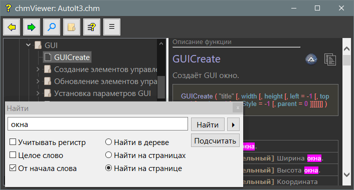
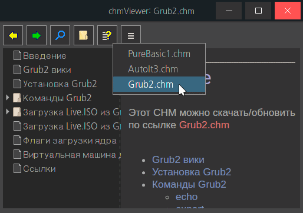

chmViewer
Назначение
Просмотр CHM-файлов. Подключить к редактору используя ком-строку, выделить слово и вызвать горячую клавишу.

В Linux.

Работа с программой
Параметры в файле chmViewer.ini
[set]
width=660 ; ширина окна
height=560 ; высота окна
splitter=300 ; позиция разделителя между деревом и веб-контентом
winbg=3F ; цвет окна (hex-формат), если 0 то игнор.
background=30 ; цвет фона окна содержания (hex-формат), если 0 то игнор.
foreground=a ; цвет текста окна содержания (hex-формат), если 0 то игнор.
select=1 ; выбор справки по номеру пункта в меню, начиная с 1 (из секции [chm] для существующих)
flgfind=4 ; Устанавливает флаги в окне поиска: 1 - учитывать реигстр, 2 - целое слово, 4 - искать от начала слова.
editor=C:\Windows\System32\notepad.exe ; путь к редактору для открытия ini-файла, TOC и страниц из дерева. В Windows для блокнота параметр не нужен, он по умолчанию если не указано. В Linux например geany
[chm]
PureBasic.chm|6237657=C:\PureBasic_Help_Compile\TOC.hhc ; путь к hhc ранее открытой справки (создаётся автоматически программой).
[last]
PureBasic.chm|6237657=Break ; последняя страница (это план на будущее)
Цвет в шестнадцатеричном формате, может быть задан упрощённо, например "F" означает "FFFFFF", "3F" = "3F3F3F", "F95" = ""FF9955"
Меню обработки
Исправить DOCTYPE - в Linux это может стать проблемой отображения html-файлов. Этот тег в первой строке html-файла.
Преобразовать HTML из ANSI в UTF-8 - Linux по умолчанию воспринимает файлы как UTF-8 и не понимает ANSI-кодировки Windows.
Исправить псевдокод в дереве - если в содержании символы выглядят как псевдокод, например для кавычек это " , то исправляет, заменяя на явные символы.
Меню обработки действует для открытой справки. После обработки переоткрыть.
Окно поиска
Поиск по дереву и по странице быстр.
Поиск по всем страницам выполняет поиск во всех html-файлах, и те, в которых найдено будут выведены в результирующий список. Скорость поиска зависит от числа html-файлов. Поиск русских слов (в Linux) можно проводить пока только если справка переведена в формат UTF-8 (см. меню обработки).
Поиск по странице подсвечивает искомое слово. Нет проверки, что текст не является тегом html, поэтому результат поиска тегов выдаст неожиданный результат.
Кнопка "Подсчёт" и "Далее" (в виде стрелки) работают только с деревом.
Получив список результатов и нажимая на ссылки и делая поиск по странице всегда можно вернуться к списку результатов нажимая кнопку-стрелку "Назад".
При поисках создаются временные файлы "chmViewerFind.htm", которые кешируются в текущей сессии, а при закрытии программы все они будут удалены. Создаваемые списки хранятся в корне справки, а страницы с подсветкой в папках рядом с оригиналами, тем самым не нарушая внутренние относительные пути к css и png файлам.
Командная строка
Утилита удобна для вызова из редактора:
pathfile.chm - если параметр единственный и является путём CHM-файл, то будет открыт.
/w:word - чтобы передать ключевое слово, которое будет открыто в дереве справки (если найдено).
/h:pathfile - путь к файлу hhc, вместо параметров "/p:" и "/t:", куда распакован chm-файл (предварительно открыть CHM-файл в chmViewer).
/p:path - путь к папке, куда распакован chm-файл (предварительно открыть CHM-файл в chmViewer).
/t:toc-file - имя файла содержания без расширения.
/f:flag - при поиске комбинация флагов: 1 - учитывать регистр, 2 - целое слово, 4 - искать от начала слова.
Порядок параметров не имеет значения, префиксы определяют назначение. Параметры имеют приоритет над ini-файлом.
В Linux префикс "-", то есть -p:path, что помогает отличать от пути начинающегося с "/"
Использование в PureBasic
в Windows:
chmViewer.exe /w:%WORD /p:"C:\PureBasic_Help\" /t:"Table of Contents" /f:4
в Linux:
chmViewer -w:%WORD -p:"/home/user/Apps/purebasic/tools/chmViewer/" -t:"Table of Contents" /f:4
Использование в AkelPad
"Справка" Exec(`"%a\AkelFiles\Tools\chmViewer.exe" /p:"C:\PureBasic_Help\" /t:"Table of Contents"`) Icon("%a\AkelFiles\Tools\chmViewer.exe")
Использование в Linux
Необходимо установить 7zip. Пакеты могут называться по разному, главное чтобы в папке "/usr/bin" появился файл "7z"
в Arch пакеты "7zip"
в Mint либо пакет "7zip", либо "P7zip-full"
в MX пакеты "7zip", "p7zip-full", "p7zip"
в Fedora установил "p7zip-gui.x86_64"
Также необходим пакет xdg-utils для запуска файлов в браузере или редакторе. При этом в ini-файле необходимо задать редактор, например editor=geany, иначе при выборе пункта "открыть в редакторе" в отсутствии параметра editor= будет использоваться команда xdg-open и откроет файл в браузере.
Проблемы
1. В Linux имеется регистро-зависимость имён файлов, что может создать проблему открытия html-страниц.
2. Дерево содержания может иметь псевдокод символов, требуется преобразование в явный текст.
3. В Linux не поддерживается ANSI в файле содержания (Table of Contents.hhc), поэтому преобразовывается в UTF-8.
4. Необходим запуск одного экземпляра программы при повторном открытии того-же chm-файла.
5. Нужна горячая клавиша мыши (боковая) для возврата на предыдущую страницу.